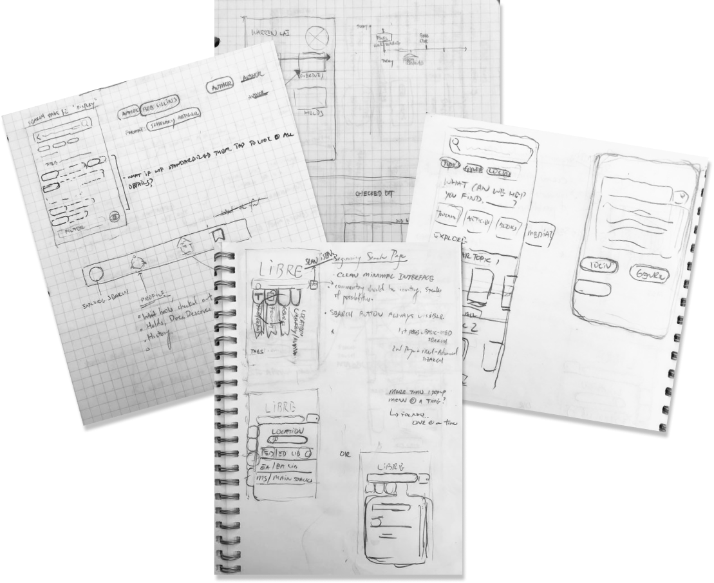
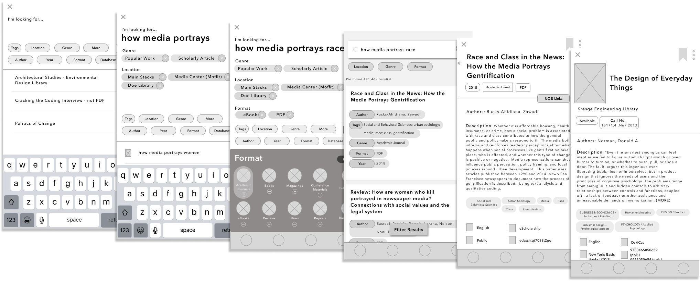
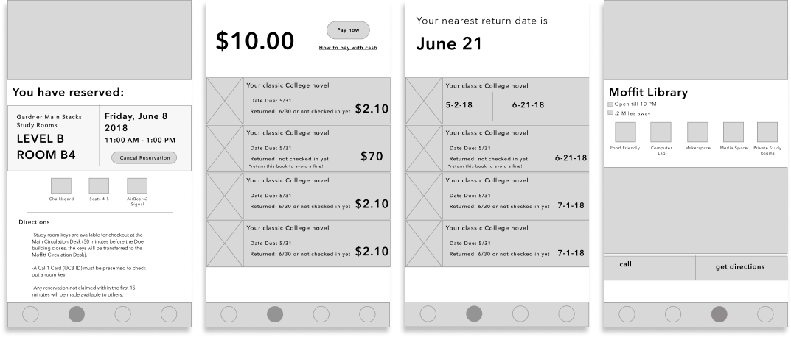
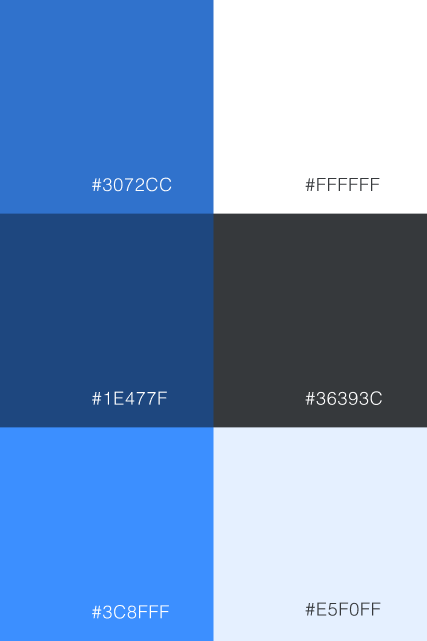
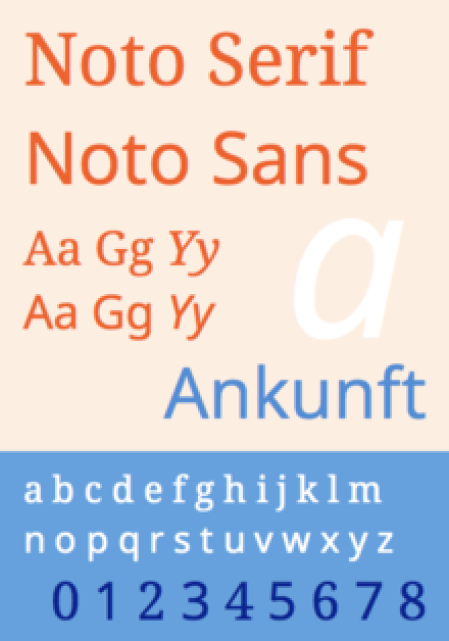
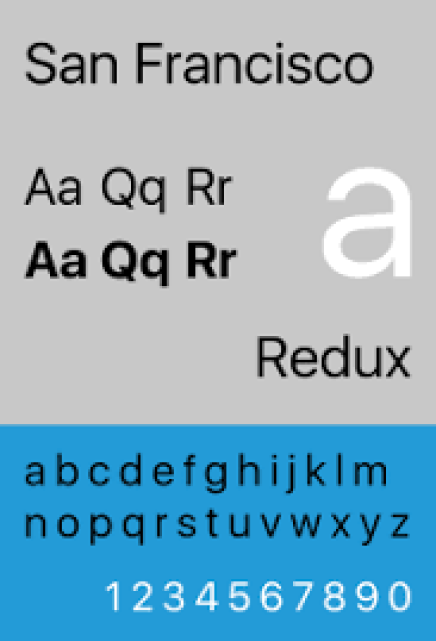
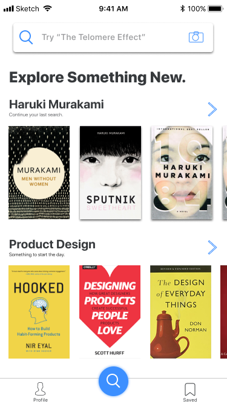
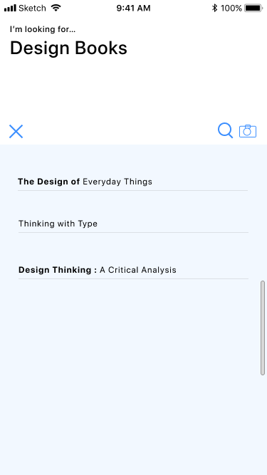

Background
OskiCat is UC Berkeley’s official library catalog, where students can access millions of library resources from around campus and online. OskiCat debuted in 2015, after replacing older search engines, seeking to provide more control for students to navigate through a huge library database. OskiCat provides a number of search features, allowing for advanced search by virtually any category.
Challenge
Create a concept app of UC Berkeley’s library catalog “OskiCat” for literature lookup and library facility access.
Skills
- User Experience Design
- Sketch Prototyping
- Mobile Interface Design
1. Product Goals
After having used various library
applications that are available on the App Store,
I found that these were either too complex,
or just unstructured.
I designed Libre with the intention of creating
a library app that could handle the functionality of my
university's library system.
Product Goals
- Above all, the search
experience should communicate a sense of patience and
curiosity.
- Most students search
in a cyclical fashion,
usually repeating the same patterns with narrowed down
search parameters.
- In order to alleviate the
eye strain of text heavy objects, use recognizable
iconography and visuals.
2.
Initial Sketches and Concepts
Defining Opportunities for Use
I began with the assumption that users
were going to need to backtrack. Users
will be making mistakes/ experimenting
around with search conditions.
Made visuals and iconography contrast-y
and directly visible. I thought this could
relieve strain on the user’s eyes but also
allow for retrieval while backtracking.
The app itself should also capture the overall
library experience, giving information about different
libraries around campus and access to library facilities.
I also played around with the idea
of an assistant in mind. What if we
could make a fun and inviting search tool,
rather than it being a sterile tool?

3.
Mid-Fidelity Interface
Keeping the non-linear search experience in mind, I emphasized
an experience that was easily filterable, and forgiving with
mistakes.
To communicate these functions in a personable way,
I thought of different variations of guiding text to
simulate expertise and calm.


4.
High-Fidelity Screens



Style Guide
Filter Parameters
Students can page through filters
categories one at a time to prevent overload of
information. Filter parameters chosen are
interactive and easily controlled.
This allows students to cognitively
group which parameters they are using.

Secondary Elements of Search
Language was curated to reflect brightness,
optimism, and a go-getter attitude. They were also meant to
match the theme of “exploring". Camera scanning of ISBN’s
could readily be used for students who are looking for
books they’ve found outside of school.




One common problem among students in various
colleges was that their library systems were
not unified well, forcing students to search
for simple information like “Overdue Fines”
or “How to reserve a library room".
As a secondary focus, I wanted
to improve the consistency of the
platform and create an experience that
could match the intuition of a student.
By including a dedicated profile page,
students could both access their own
account materials, while also keeping tabs
on which library facilities they had on
reserve.
After having used various library applications that are available on the App Store, I found that these were either too complex, or just unstructured. I designed Libre with the intention of creating a library app that could handle the functionality of my university's library system.
Product Goals
- Above all, the search experience should communicate a sense of patience and curiosity.
- Most students search in a cyclical fashion, usually repeating the same patterns with narrowed down search parameters.
- In order to alleviate the eye strain of text heavy objects, use recognizable iconography and visuals.
Initial Sketches and Concepts
Defining Opportunities for Use
I began with the assumption that users were going to need to backtrack. Users will be making mistakes/ experimenting around with search conditions.
Made visuals and iconography contrast-y and directly visible. I thought this could relieve strain on the user’s eyes but also allow for retrieval while backtracking.
The app itself should also capture the overall library experience, giving information about different libraries around campus and access to library facilities.
I also played around with the idea of an assistant in mind. What if we could make a fun and inviting search tool, rather than it being a sterile tool?
3. Mid-Fidelity Interface
Keeping the non-linear search experience in mind, I emphasized an experience that was easily filterable, and forgiving with mistakes. To communicate these functions in a personable way, I thought of different variations of guiding text to simulate expertise and calm.
4. High-Fidelity Screens
Style Guide
Filter Parameters
Students can page through filters
categories one at a time to prevent overload of
information. Filter parameters chosen are
interactive and easily controlled.
This allows students to cognitively
group which parameters they are using.
Secondary Elements of Search
Language was curated to reflect brightness, optimism, and a go-getter attitude. They were also meant to match the theme of “exploring". Camera scanning of ISBN’s could readily be used for students who are looking for books they’ve found outside of school.